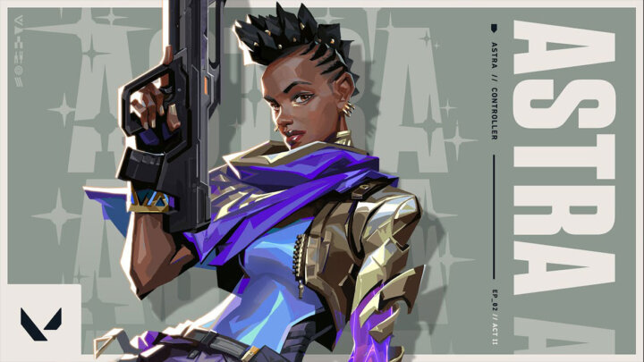

Small buffs for Astra in VALORANT Patch 2.07
The newest patch for VALORANT is here and we see some tweaks to a few agents, alongside some bug fixes.
Arguably the biggest change on the side of the agents is the one to Astra. She sees her Gravity Well altered, which will now pull Agents that are defusing the spike, potentially interrupting the defuse if they are pulled out of range. Raze also sees a small change, which will add a sound effect to her flying through the air, allowing opponents to better track her. Finally a fix was done in regards to Viper, who suffered from a bug in regards to damage calculation following her most recent buff.
Aside from agent changes the 2.07 patch also brought some other bug fixes and quality-of-life changes. This includes a spectator bug where observers would see incorrect aim vectors for scoped-in snipers, improvements to the ping wheel selection tool and Cypher tripwires now displaying to observers in the correct team colors. Yoru is now no longer able to plant the spike after using Gatecrashing during Dimensional Shift.
Finally competitive players will also breathe a sigh of relief as issues with server selection were fixed, alongside the trouble that could pop up during the promotion screen. The match history filter issue when viewing the match history of a friend was now also fixed.